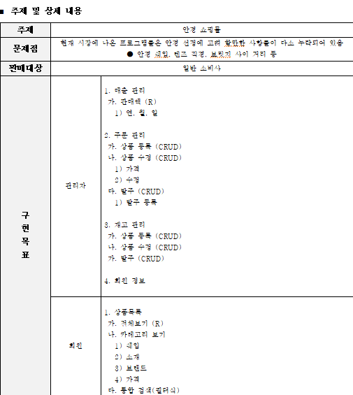

About Me
사건(책)을 독파하는 몰입력 하나로 국어 국문학과를 졸업했습니다. 따라서 새로운 분야를 공부하고 분석하는것에 자신이 있으며 도메인 분석 소요가 있을때 선봉이되어 해내고 싶습니다.
개발을 할 때 저는 하나의 우주가 된것만 같습니다.


Java
|
Oracle
|

HTML
|

CSS
|

JavaScript
|

VSCode
|

GitHub
|

Git
|
JavaSpring
|

Eclipse
|

IntelliJ
|
Jsoup
|

Sourcetree
|
울산대학교 국어 국문학과를 2019년 3월에 졸업 했습니다. 18살 이후 연 평균 50권 이상 책을 읽어왔으며 도메인 분석과 텍스트를 이해하는 능력이 출중합니다. 이런 능력들은 다방면으로 제가 살아가는데에 날개를 달아주었으며 실무에서도 강점으로 작용할 것이라 확신합니다.
학군 장교으로 임관하여 2021년 6월까지 장교의 길을 걸었습니다. 소대장, 중대장, 인사과장, 부중대장 4개의 직책을 수행하며 쌓은 경험을 바탕으로 신입부터 관리자 직책까지 각각의 본질적인 임무 수행 방안을 제대로 이해하고 있으며 상관을 따르는 팔로우쉽은 물론이고 전우를 이끌어나가는 리더십에 자부심이 있습니다. 이 경험들이 토대가 되어 지금의 저는 "끝까지 버티고 반드시 이겨내는 사람"이 되었다고 생각합니다.

IT전문 교육기관인 '쌍용 교육센터'에서 Java 개발자 과정을 수강 하였습니다. 교육 수료 간 3번의 팀장 역할을 수행 하였으며 팀장 역할의 일부로 주도적으로 프로젝트를 이끌어나간 경험이 있습니다. 처음 배운 언어가 자바이기 때문에 다른 언어들보다 더 애착이 깊으며 제가 해보고 싶던 프로젝트들도 대부분 자바를 수단으로 토이 프로젝트화 하였습니다.
누군가 당신에게 "코딩 공부 뭐부터 시작해야해?"라고 물어본다면 무엇이라 대답하시겠습니까? 저는 20살 때 부터 "주식 공부 어떻게 시작해야해?" 라는 질문을
들어왔습니다. 이 질문에 답변하기가 어려운 이유는 코딩과 주식 둘 다 분야가 너무 광범위하고 때문에 처음 접하는 사람들에게는 진입 장벽이 너무 높기 때문이라고 생각합니다.
그래서 저는 제가 개발을 시작하게 되면 주식을 아무것도 모르는 사람도 쉽게 접할 수 있게 도와주는 보조적인 프로그램을 만들고 싶었습니다. 그래서 탄생한 것이 바로
이 프로그램입니다.
저는 이 프로젝트에서 아이디어 제공, 로직 형성, 설계도 작성 등 거의 모든 작업에 참여하였습니다.
남이 시켜서 하는 프로젝트가 아니라 철저히 필요성에 의하여 만든 프로젝트인 만큼 구현했을 때의 성취감과 벅차오름은 이루 말할수 없었습니다. 5명 이상이서 진행하는 팀 프로젝트만 해오다가 단 둘이서 진행해보니 마치 한 몸처럼 움직여야 하기 때문에 커뮤니케이션을 해야할 소요도 정말 많았고 잘 해냈던 프로젝트입니다.
1991년 이래로 상장된 국내 기업 약 2000개 가량의 데이터를 대상으로 생성되어 있으며 이 프로그램은 특정 종목을 권장하는 용도가 아닌, 주식 투자 혹은 주식 공부의 보조적인 수단으로써 활용하는 용도이기 때문에 엄밀성에 오차가 발생할 수 있습니다.
실시간 검색어 20개와 그에 매칭 된 주식들을 노출하는 페이지입니다.
매칭된 주식의 금일 정보를 보여줍니다. 실시간 검색어에 올라와 있다는것은 그만큼 핫 포테이토일 확률이 큰 주식에 해당하기 떄문에 변동 폭이 큰 편입니다.
주식 종목을 분석할 때 표준으로 사용되는 PER(전일 보통주 수정 주가), 현금 배당 수익률 등의 지표를 보여주는 화면입니다.
당월의 주식을 분석한 자료를 보여줍니다. 주 최고, 주 최저, 발행 주식 수, 시가 총액등의 자료를 포함합니다.
프로젝트에 느끼는 자부심은 다음과 같습니다.
1. 시장에도 키워드별로 주식을 매칭시키는 프로그램이 없다.
2. 따라서 콘솔에 그치지 않고 계속해서 버전 업 가능하다.
지속적으로 버전을 업그레이드 해나가겠습니다.
이 프로젝트는 제가 팀장으로 참여한 프로젝트로써 안경 쇼핑몰을 파일 입출력 콘솔 환경으로 구현한 프로젝트입니다.
프로젝트의 진행은 1. 기획서 작성, 2. 요구사항 명세서 작성
3. 데이터 파일 생성 4. 순서도 작성 5. 클래스 다이어그램 작성
6. 개략적인 화면 설계, 7. 코드 작성 순으로 진행하였습니다.
이 프로젝트에서 제 역할은 팀장, 장바구니, 물품 상세 페이지, 비회원 주문하기와 결제하기 서비스 구현, 발표, 최종 자료 검토 였습니다.
제가 이 프로젝트에 임하는 마음가짐은 두 가지 였습니다. 처음 해보는 프로젝트이고 팀원 중 전공자 등 유경험자가 많았기 때문에 "잘하기" 보다는 첫번째로 "팀장으로써 가장 오랜 시간 프로젝트에 임하고 가장 꼼꼼히 검토하는 것" 이었고 두번쨰는 매일이 군대에서 했던 당직 근무라고 생각하고 물러서지 않는것이었습니다.
프로젝트 기획안입니다. 보시는바와 같이 시장에 나와있는 안경 쇼핑몰들이 오프라인으로 안경을 구입하는 리스크를 줄이기 위해 고려 사항들을 충분히 제공하지 않고 있다는 점에 문제 의식을 삼았고, 프로젝트를 진행하였습니다.

실제 코드 구현에 앞서 요구사항 명세서를 작성하였습니다. 처음 하는 프로젝트인 만큼 가장 품을 많이 들인 파트였으며, 엑셀로 501개의 셀에 해당하는 분량을 작성하였습니다. 이 과정에서 팀원 중 한명은 이렇게 까지 하는것은 불필요행정 이라고 생각한다며 불만을 가지는 사람이 발생하기 시작했고 저는 팀이 방향성을 잃지 않기 위해서 해당 인원과 1:1로 이야기하여 풀어보려는 일련의 시도를하고 조금 더 솔선수범 함으로써 개발자 세계에서 팀 프로젝트간 불화를 어떻게 중화시켜야 할지를 배우게 되었습니다.

프로젝트가 어떻게 이어질지 개략적으로 나타낸 순서도입니다. 빠른 진행을 위해 제가 주도하여 작성하였던 파트입니다. 특별한 라이브러리 없이 파워포인트로 만들었기 때문에 툴의 중요성을 절감하였던 파트이며, 요구사항 분석서와 기획서보다 이 순서도를 보면서 전체적인 틀을 파악하는 용도로도 요긴히 사용되었습니다.
처음 진행하는 프로젝트이기 때문에 객체의 설계도 당연히 처음 해보았습니다. 우선 최대한 엄밀히 구분하였으나 이후 조영호 저자가 쓴 객체 설계 지식서인 "오브젝트"로 따로 객체지향 설계의 공부를 해본 결과 객체간의 의존성이 너무 강하다는 단점이 있는 설계입니다. 이 프로젝트 덕분에 저는 별도의 리펙토링과 디자인 패턴을 구상 예제가 필요 없었습니다.
코드 구현에 앞서 콘솔 환경으로 인터페이스를 어떻게 구성할지를 ppt로 구성한 파일으로, 화려하고 거창하게 표현하기보다는 깔끔하고 직관적으로 표현하여 사용자 경험을 살리는 방안으로 작업을 진행하였습니다.

프로젝트의 메인 화면입니다. 헬로우 메세지와 함께 안경의 모습을 아스키 코드로 표현하였습니다.

현재 판매중인 안경의 전체 상품을 볼 수 있습니다. 한 페이지에 20개 씩 볼 수 있도록 페이징 하였으며, #과 숫자를 입력하면 물품의 상세 페이지를 볼 수 있습니다. 데이터는 약 1200개 정도로, 현물 자료들을 크롤링 하였습니다.

판매중인 상품을 카테고리별로 확인할 수 있습니다. 전체보기와 마찬가지로 사용자가 편하게 볼 수 있게 페이징 하였으며, 해당 화면은 "뿔테" 카테고리에 해당하는 화면입니다.
상품의 상세 정보를 보여주는 화면으로 "바로 주문하기"와 "장바구니 추가" 중 하나를 선택할 수 있는 화면입니다.

상품을 통합 검색하는 화면입니다. 쉐입, 소재, 브랜드, 가격, 규격, 검색어 6가지의 조건을 입력할 수 있고, 입력 완료 시 해당 조건에 해당하는 상품들만 보여주는 기능이 있습니다.

통합 검색 조건에 해당하는 상품들만 출력해주는 화면입니다.

이전까지의 화면들은 "비회원"과 "회원"모두 공통적으로 사용이 가능한 화면이었으며 로그인과 회원을 구분하기 위한 절차인 회원가입을 진행하는 화면입니다.
회원 가입 한 정보를 토대로 로그인을 하는 페이지입니다. 로그인을 하였을 경우 장바구니를 조금 더 쉽고 장기적으로 사용할 수 있다는 장점이 있습니다.

장바구니나 물품 상세 페이지를 통해 주문을 할 수 있는 화면입니다.
상품의 주문자와 수령인의 정보가 일치하지 않을 수 있으므로 수령자 정보를 입력합니다. 만약 해당 화면에서 '예'의 값인 y를 누르면 주문자의 정보가 그대로 입력됩니다.
수령인 입력과 동격의 내용으로 배송 주소를 입력합니다.
해당 상품에 대한 주문이 최종적으로 완료되었다는 결제 완료 화면입니다.
관리자는 일, 월, 총 매출로 삼분화 된 매출을 한눈에 가시적으로 확인할 수 있으며 그에 해당하는 화면입니다.
쇼핑몰의 특성 상 환불, 주문 처리등이 필수적으로 필요하고 관리자가 주문을 주도적으로 컨트롤 할 수 있어야 합니다. 모든 주문들을 볼 수 있는 화면입니다.

주문 내역 중 하나의 주문을 선택하면 그 주문의 디테일한 정보들을 보여주는 화면입니다.
관리자가 현재 보유중인 재고를 관리하는 화면입니다. 이 화면에서 상품 등록, 상품 수정, 발주 모두 가능하며 앞선 방대한 데이터를 가진 모든 화면과 마찬가지로 페이징 되어 있습니다.
이 프로젝트의 발표 시간은 15분으로 프로젝트의 기능 수를 고려했을 때 "시연만 하기에도 빠듯한" 시간이었습니다. 어영부영 피피티를 빠르게 넘기고 얼버무리면서 발표를 해버리면 우리가 밤새 했던 노력들이 아무것도 아닌것이 될 것 같았습니다. 따라서 ppt의 수는 최소화 하였고 거의 모든 시간을 시연에 사용하돼 최대한 기술적인 부분을 부각하도록 노력하였습니다. 해당 내용은 제가 발표를 준비하면서 짯던 대본(A4용지 5장 분량)의 일부입니다.
나름대로 발표를 성공적으로 마칠 수 있었고 조원들 모두 성공적으로 해냈다고 칭찬을 아끼지 않았습니다. 이 프로젝트는 하루에 1시간씩 자며 준비한 프로젝트로 단기간에 저를 가장 성장 시킨 프로젝트였습니다.
이 글은 프로젝트를 마치고 난 후 그 기분을 잃고싶지 않아 써놨던 글입니다. 클릭 시 원본으로 이동
안경집 프로젝트에 대한 최종 요약본입니다.
이 프로젝트 또한 제가 팀장으로 참여한 프로젝트로써 제가 교육 받았던 쌍용 교육센터의 인사 관리 프로그램을 오라클 기반으로 구현한 프로그램입니다. 업무의 순서는 요구분석서 작성 -> ERD 작성 -> 테이블 정의서 작성 -> 데이터 정의서 작성 -> 쿼리문 작성 -> 업무 SQL 작성 -> PPT 작성 순으로 진행 하였습니다.
이 프로젝트에서 제 역할은 팀장, 교사 평가 및 작성 기능, 교사 평가 작성 기능, 코로나 대면/비대면 등록 및 조회 기능, 교육 지원금 조회 기능, 반 등수 조회 기능, 프로젝트 공고 모집 기능, 기수별 게시판, Q&A작성 기능 구현, 팀 코드 뼈대 제작, 코드 양식 통일, 파일 양식 통일, 최종 검수, PPT 제작이었습니다.
이 프로젝트에서 구현한 모든 SQL 쿼리문의 기능들은 PL/SQL을 이용하여 프로시저화 하였습니다.
프로젝트 요구 분석서의 일부입니다. 학원 인사관리에 필요한 모든 요구분석 사항들을 프로젝트의 초입에 최대한 도출하여 튼튼한 프로그램을 만들기 위해 노력했습니다. 이 프로젝트의 경우 사용 계층이 누구냐에 따라 어느정도의 프라이빗을 설정해야 할지부터 권한까지 명확히 나누어야 하는 성향의 프로젝트여서 요구 분석서는 계층별로 분화하여 작성 하였습니다.
프로그램을 구현하기 위한 뼈대에 해당하는 ERD입니다.

생성할 테이블들의 정의서와 쿼리문입니다.

생성할 데이터들의 정의서와 쿼리문입니다. 더미 데이터를 최초로 생성하기 위하여 자바로 난수를 발생시켜 더미 데이터를 만들었습니다.

각 기능들의 데이터를 불러오기 위한 업무 SQL입니다.

관리자의 게정을 조회하는 화면입니다.

관리자는 교사 계정 관리 및 개설 과정, 개설 과목에 사용하게 될 기초 정보를 등록 및 관리할 수 있습니다.

교사 정보는 교사 이름, 주민번호 뒷자리, 전화번호, 강의 가능 과목 등을 제공합니다.

과정 정보는 과정명, 과정기간(시작년월일, 끝년월일), 강의실 정보를 포함합니다.

개설 과목 정보는 과목명, 과목기간(시작 년월일, 끝 년월일), 교재명, 교사명을 포함합니다.

교육생 정보 입력시 교육생 이름, 주민번호 뒷자리, 전화번호를 기본으로 등록하고, 주민번호 뒷자리는 교육생 본인이 로그인 시 패스워드로 사용된다. 등록일은 자동으로 입력되도록 합니다.

학생의 성적을 조회하는 화면입니다.

출결 현황을 기간별(년, 월, 일) 조회할 수 있고, 특정(특정 과정, 특정 인원) 출결 현황을 조회할 수 있으며 모든 출결 조회는 근태 상황을 구분할 수 있습니다.(정상, 지각, 조퇴, 외출, 병가, 기타)

현재 수강중인 과정의 1인당 멘토 1명씩 배정하였으며 그에 해당하는 화면입니다.

관리자는 교육생 정보(이름, 과정명, 수강 일수)를 조회하고 교육 지원금 계산이 된 값과 입금 예정날짜를 조회하고 입금 확인을 조회할 수 있습니다.

교사 정보(이름, 월급, 월급날짜, 수강중인 강좌)를 조회하고 월급 날짜에 맞춰 지급 되었는지 확인할 수 있습니다.

학생의 코로나에 따른 비대면 여부를 조회할 수 있습니다.

교사의 코로나에 따른 비대면 여부를 조회할 수 있습니다.

졸업생 취업 현황을 알 수 있습니다.

졸업생의 취업처와 그 취업처가 위치한 도시, 그리고 연봉을 조회할 수 있습니다.

관리자는 교육생의 팀 편성에 대한 권한은 없고 오로지 "조회"만 할 수 있습니다. 팀 편성 권한은 교사에게 있으며 조회하는 화면입니다.

관리자는 교육생의 상담을 조회할 수 있으며 그에 해당하는 화면입니다.
교육센터 운영 프로젝트의 PPT 자료입니다. 학원의 운영 프로젝트 인 만큼 아기자기하고 귀여운 이미지를 주고싶었으며 PPT 제작에 꽤나 큰 공을 들였습니다.
교육센터 운영(DB) 프로젝트에 대한 최종 요약본입니다.
이 프로젝트를 통해서 데이터를 효율적으로 관리하는 방법을 깨달았고 어떻게 설계를 하느냐에 따라 프로젝트가 크게 좌지우지 될 수 있다는 것을 배운 것 같습니다.
이 포트폴리오는 입사를 하기위한 것이기 이전에 더 좋은 사람이 되고싶은 노력의 소산입니다.
따라서 포트폴리오나 입사와 관련된 것이 아닌 어떠한 조언이라도 달게 받겠습니다.
Address: 서울특별시 신림동 문성로 205-7
Phone: 010-4562-3255
Email: lh0156@naver.com